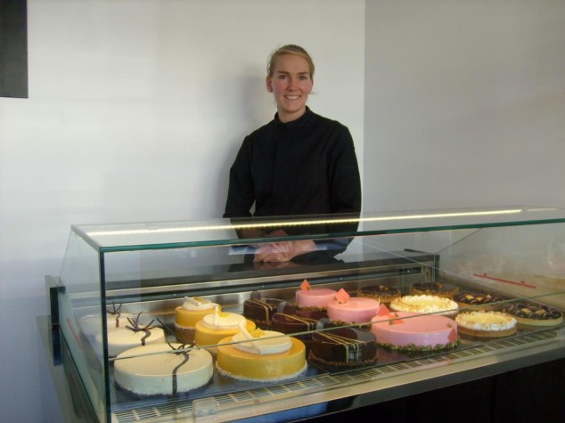

La pâtisserie, c'est du croquant, du moelleux, du fondant, du crémeux, du craquant, de la légèreté. C’est le désir, l’expérience et la surprise à la fois. La Pâtisserie c'est aussi cette passion qui m'inspire depuis toute petite. A 6 ans déjà, je m'amusais à réinventer des desserts, mélangeant toutes sortes d'ingrédients, découvrant toutes ces alliances, ces textures et ces millions de saveurs. Aujourd'hui, c’est avec l’amour de ce métier et une équipe merveilleuse que je poursuis cette expression pâtissière. Fanny pâtisserie use de ses savoirs faire pour vous inviter à vivre un moment intense de partage autour d’une de nos créations. Entremets, macarons, confiseries, viennoiseries et chocolats, tous nos produits sont faits maison. Nous choisissons précisément nos matières premières et nos gâteaux évoluent tout au long de l’année, suivant les saisons et les récoltes fruitières locales. Tous les 3 à 4 mois une nouvelle carte de desserts vous est proposée. Côme et moi-même auront le plaisir de vous accueillir en boutique les vendredis samedis dimanches et jours fériés. "Happiness is only real, when shared"
QUI
est-ce?

Les Chocolats
Les Confitures
Le Cake Signature
Vos Fêtes
La Pâtisserie
Les Macarons
Les Gourmandises
Contact